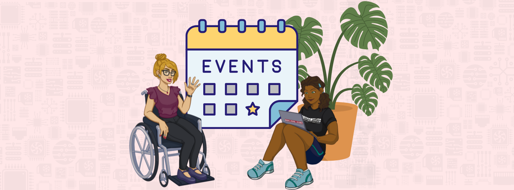
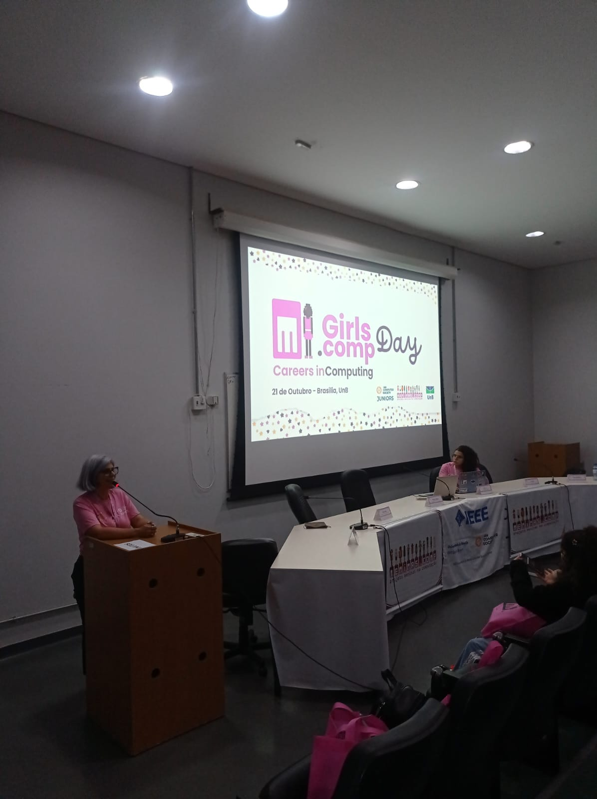
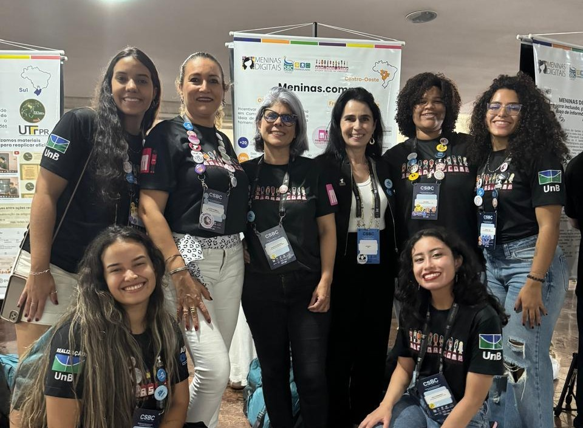
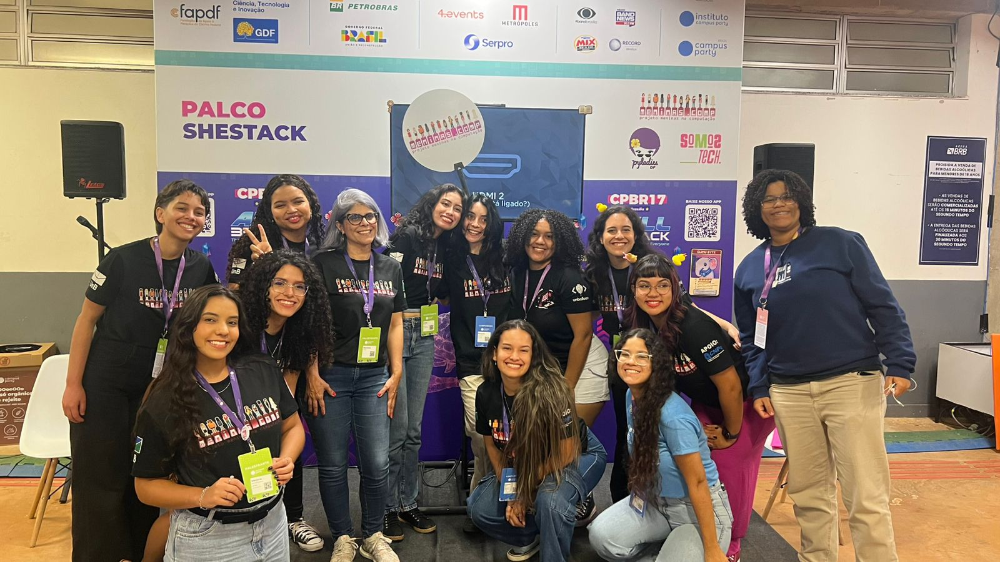

Apoio



Ao longo de sua trajetória, o Meninas.Comp tem promovido e participado de uma série de eventos que conectam, inspiram e transformam a presença feminina na tecnologia.
Reunimos diferentes iniciativas em sequência, criando uma jornada contínua de aprendizado e troca. Com workshops e oficinas práticas, onde participantes têm o primeiro contato com programação, robótica e pensamento computacional de forma acessível e dinâmica.
Promovemos palestras e rodas de conversa com mulheres que atuam na área, compartilhando suas experiências, desafios e trajetórias.
Realizamos eventos de maior imersão, como hackathons, encontros e ações em parceria com universidades, empresas e comunidades, ampliando o impacto das discussões e incentivando a colaboração.
Encerrando esse ciclo, desenvolvemos atividades voltadas à comunidade, levando tecnologia para meninas do ensino básico por meio de oficinas educativas e experiências práticas, despertando o interesse desde cedo.
IEEE CS Juniors
O evento, realizado em 2025, teve como objetivo apresentar às meninas do ensino fundamental e médio, as possibilidades de carreira nas áreas de Engenharia da Computação e Ciência da Computação. A programação inclui oficinas práticas, atividades interativas e visitas guiadas aos laboratórios de informática e ao campus da Universidade de Brasília.
Para mais informações acesse: https://girlscompday.vercel.app/

Maceió - Alagoas
O Meninas.Comp esteve presente no Congresso da Sociedade Brasileira de Computação 2025, contribuindo ativamente com a apresentação de artigos em importantes espaços do evento, como o Women in Information Technology (WIT), o Workshop sobre as Implicações da Computação na Sociedade (WICS) e o Workshop sobre Educação em Computação (WEI).
A participação reforça o compromisso do projeto com a produção científica, a promoção da diversidade na tecnologia e a reflexão sobre o impacto social da computação. Além das apresentações, o evento proporcionou um ambiente rico para troca de experiências, networking e fortalecimento de parcerias com pesquisadores e iniciativas de todo o país.

O evento contou com a participação do Meninas.Comp como uma das comunidades convidadas, reforçando seu papel na promoção da inclusão e do protagonismo feminino na tecnologia. Tivemos a oportunidade de compartilhar o palco SheStack com outras duas comunidades inspiradoras, Somos Tech e PyLadies, criando um espaço rico de troca de experiências e aprendizado.
Nesse palco, o Meninas.Comp contribuiu com palestras e oficinas, abordando temas relevantes da área de tecnologia de forma acessível e interativa. As atividades foram pensadas para engajar o público, incentivar o interesse pela computação e fortalecer a presença de mulheres na área, alinhando-se à missão da comunidade de inspirar, acolher e capacitar novas gerações.
